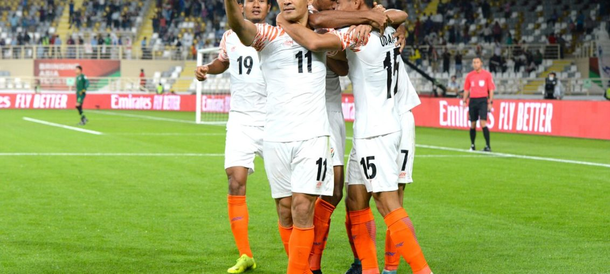

Posted at Date: January 7, 2019
Credit : রাইট স্পোর্টস ওয়েব ডেস্ক
‘সুনীল’ আকাশে ভারতীয় ফুটবলকে নিয়ে উড়লেন ‘ছেত্রী’!

থাইল্যান্ড – ১ ভারত – ৪
(দাংদা ৩৩ ) (সুনীল ২৭ পে, ৪৭, অনিরুধ ৬৮, জেজে ৮০)
তিদিন সূর্য ওঠে তোমায় দেখবে বলে, সুনীল ছেত্রী! কবীর সুমনের গানের কলি ধার করতে ইচ্ছে হয় আবার, চৌঁত্রিশের ছেত্রী যখন সুনীল আকাশে নিয়ে যান অভাগা ভারতীয় ফুটবলকে। সম্ভাবনা তৈরি হয় এক অসম্ভব স্বপ্নিল উড়ানের, ম্যাচ শুরুর আগে যা ছিল কষ্টকল্পনায়ও অভাবনীয়! এএফসি এশিয়ান কাপ শুরু করল ভারত আল নাহিয়ান স্টেডিয়ামে, ইতিহাসের সেরা জয় দিয়ে। ফিফা র্যাঙ্কিং অনুযায়ী ৯৭-এর বিরুদ্ধে ১১৮-র খেলা। কিন্তু, থাইল্যান্ডের শক্তিশালী লিগ, থাইল্যান্ডের দক্ষিণ এশীয় ফুটবল প্রতিযোগিতায় নিয়মিত দুর্দান্ত খেলা এবং থাইল্যান্ডের জাতীয় ফুটবলারদের বিদেশে, জাপানেও খেলার অভিজ্ঞতা মিলিয়ে বিশেষজ্ঞরা বারবারই বলেছিলেন, যদি একটিও পয়েন্ট পায় ভারত, যথেষ্ট। ভারত পেল তিন পয়েন্ট, গোল-পার্থক্যে নিজেদের ঘরে ৩ এবং গ্রুপে শীর্ষস্থান! অবিশ্বাস্য!
পাঁচ পাঁচের নাপোলেওন বোনাপার্তের কাছে মূর্খদের অভিধানে থাকা-শব্দ ছিল অসম্ভব। পাঁচ সাতের সুনীল ছেত্রী দেখাচ্ছেন রোজ, তাঁর কাছেও অসম্ভব অস্তিত্বহীন! ৬৭ গোল করে ফেললেন আন্তর্জাতিক ফুটবলে। এখনও যাঁরা খেলছেন তাঁদের মধ্যে লিওনেল মেসির চেয়ে বেশি আর ক্রিস্তিয়ানো রোনালদোর পরে দ্বিতীয় সর্বোচ্চ। সেটাও এমন একটি দেশের হয়ে যেখানে দেশজ ফুটবল ব্যাপারটাই দেশের আমজনতার ক্রীড়ামানসে প্রায় অস্তিত্বহীন! এমনকি, ভারত যে এএফসি এশিয়ান কাপে খেলতে যাচ্ছে, জানানোর উদ্যোগও সেভাবে নেওয়া হয় না দেশেরই সংবাদমাধ্যমে। তাই এমন ঐতিহাসিক জয়ের দিনে ম্যাচ-রিপোর্টের তথাকথিত টেকনিক্যাল কচকচি ভুলে হতেই হয় আবেগপ্রবণ, কী-বোর্ডেই!
যেভাবে গোল
প্রথম গোল, ২৭ মিনিটে :থ্রো ইন পেয়েছিল ভারত। সুনীল চট করে বল ছুড়ে দেন আশিক কুরুনিয়ানের দিকে। বল ধরে দুরন্ত গতিতে বক্সে ঢুকে গিয়েছিলেন কুরুনিয়ান। তাঁর শট সোজা থাই-গোলরক্ষক বুদপ্রোমের হাতে লেগে বুনমাথানের হাতে। রেফারি সামনেই, পেনাল্টির সিদ্ধান্ত জানাতে দ্বিধাহীন। বল বসিয়ে তৈরি সুনীল। এক-পা, দু-পা জোরে ছুটে বুদপ্রোমকে উল্টোদিকে ফেলে গোল!<>
দ্বিতীয় গোল, ৩৩ মিনিটে :১-১ করল থাইল্যান্ড। এবারও বুনমাথান। ফ্রি কিক থেকে বল রেখেছিলেন ভারতীয় বক্সে। গুরপ্রীত বেরলেন যখন, কিছু করার নেই। বিপক্ষের অধিনায়ক দাংগা সহজ হেডে পরাস্ত করে গেলেন। ভারতীয় রক্ষণকে পরের ম্যাচগুলোয় বাড়তি সতর্ক থাকতে হবে। ইউএই এবং বাহরিনের লম্বা ফুটবলাররা সেট পিস থেকে এই ধরনের সুযোগ কাজে লাগাতে বিশেষভাবে আগ্রহী হবেন।
তৃতীয় গোল, ৪৭ মিনিটে :দ্বিতীয়ার্ধের খেলা সবে শুরু। উদান্ত সিং, প্রথমার্ধে যিনি তেমন ভাল খেলতে পারেননি, বল নিয়ে দৌড়লেন ডানদিকের প্রান্ত ধরে। দুরন্ত গতিতে ছুটতে ছুটতেই বল ঠেলে দিলেন বক্সের ওপর কুরুনিয়ানকে। যেন জানতেন সুনীল পেছন থেকে ছুটে আসছে, টোকায় বল বাড়িয়ে দিলেন কুরুনিয়ান। সুনীলের জোরালো শট ডানপায়ে, জাল কাঁপিয়ে!
চতুর্থ গোল, ৬৮ মিনিটে :পেছন থেকে বল বাড়িয়েছিলেন সেই সুনীল, থ্রু, দুই ডিফেন্ডারের মাঝখান দিয়ে। বল পেয়েছিলেন উদান্ত। কিন্তু, আত্মবিশ্বাস কম থাকায় শট নিলেন না। এমন জায়গায় নিজেকে নিয়ে গিয়েছিলেন, গোল করার সুযোগ ছিল না। ঠিক সময়ে উল্টোমুখে ঘুরলেন। পাশে অনিরুধ থাপার পায়ে পাস। দলের সবচেয়ে কমবয়সি তারকা দেখালেন ঠাণ্ডা মাথায় গোল কীভাবে করতে হয়। সামনে গোলকিপারসহ তিনজন, গোলরক্ষকের মাঠের ওপর দিয়ে দূরের পোস্টে নিয়ন্ত্রিত চিপ!
পঞ্চম গোল, ৮০ মিনিটে : মাঠে এসেছিলেন ৭৮ মিনিটে। বাছাইপর্বে সাত গোল পাওয়া জেজে লালপেখলুয়ার গোলখরা চলছিল। যে-ম্যাচে দল এমন খেলছে, জেজে-ই বা পিছিয়ে থাকবেন কেন! হালিচরণ নার্জারির থেকে পেলেন বল। বুড়ো আঙুলের ডগা দিয়ে ঘুরিয়ে দেওয়া তারপর, বল যেন গোঁত্তা খেয়ে জালে!
দুটো গোল করলেন। প্রথম পেনাল্টি গোলের রাস্তা তৈরিতে তাঁর চকিত থ্রো-ইন অমূল্য। তৃতীয় গোলের আক্রমণ তৈরি তাঁর পায়ে। তাঁর চেয়ে যোগ্যতর কেউ এই ভারতীয় দলে থাকতে পারেন না জানা সত্ত্বেও অধিনায়কত্ব দেওয়া হয়নি তাঁকে। আর্মব্যান্ড পরেছিলেন গুরপ্রীত সিং সাঁধু। কোনও প্রীতি ম্যাচ নয়, ভারতীয় ফুটবলের পক্ষে এখন সর্বোচ্চ প্রতিযোগিতা, তবুও সেরা ফুটবলার অধিনায়ক নন! কোচ স্টিফেন কনস্টান্টাইন বোধহয় ভুল করেই ভেবেছিলেন, এভাবেই তাতিয়ে দেবেন! সিদ্ধান্তের পেছনে অজুহাত বা রোটেশনের যুক্তি যা-ই হোক না কেন, এই দলের অধিনায়ক সুনীল ছাড়া আর কেউ নন, আবারও প্রমাণিত, মাঠে। দুটি গোল করেছেন বলে বাহবা নিচ্ছেন না। ‘দলের ফুটবলারদের দেখুন। এই জয়ে কেমনভাবে সবাই মিলে উৎসবে মেতেছে। এটাই আসল। কে গোল করল, নয়। তিন প্যেন্ট জরুরি ছিল, পেয়েছি। দুর্দানত শুরু প্রতিযোগিতায়। এবার পরের ম্যাচের দিকে তাকিয়ে-থাকা। এভাবেই একসঙ্গে মিলেমিশে সবাই দলকে এগিয়ে নিয়ে যেতে চাই, ব্যস’, ম্যাচের পর এসে বলে গেলেন সুনীল। দুগোল করলেন যেমন, আরও দুবার গোলের খুব কাছাকাছি পৌঁছেছিলেন বিরতির দুপাশে, যথাক্রমে ৩৭ ও ৬৩ মিনিটে। সেই দুবারও গোলে বল গেলে নিশ্চিতভাবেই মহাকাব্যিক হয়ে থাকত এই ম্যাচ। কিন্তু, না গিয়েও কিছুমাত্র কমল না গুরুত্ব। এশিয়ান কাপে সবচেয়ে বড় ব্যবধানে জয়, সাড়ে ৫৪ বছর পর প্রথম জয় এবং থাইল্যান্ডকে দ্বিতীয়ার্ধে দুমড়েমুচড়ে দিয়ে জয়ের পর ভারতের নীল বাঘেরা এখন পেয়ে গেলেন রক্তের স্বাদ। সংযুক্ত আরব আমিরশাহি এবং বাহরিন, তৈরি থাকুক। তারা শক্তিশালী, নিঃসন্দেহে। ভারত কিন্তু ভয় পাচ্ছে না আর!
Top Stories

Calcutta Sports Journalists' Club requests the pleasure of your company at its annual awards functionMore...

Jasprit Bumrah has been declared fit and he will now be available for selection for India's third Test against England at Trent Bridge. More...

Ronaldo has increased Juventus' standing among Europe's elite. More...